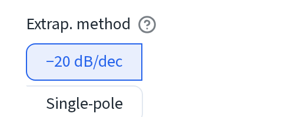
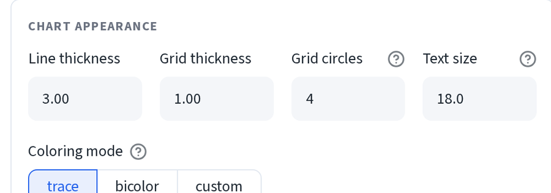
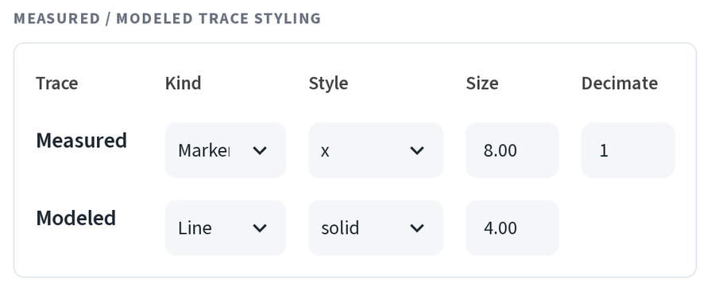
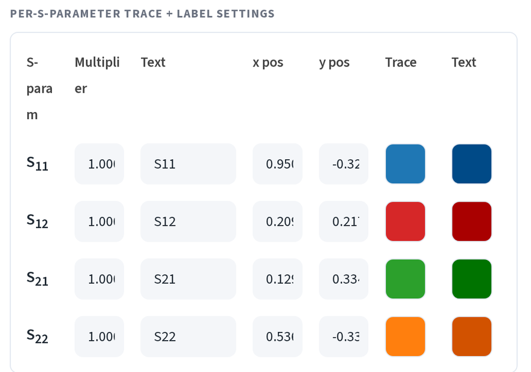
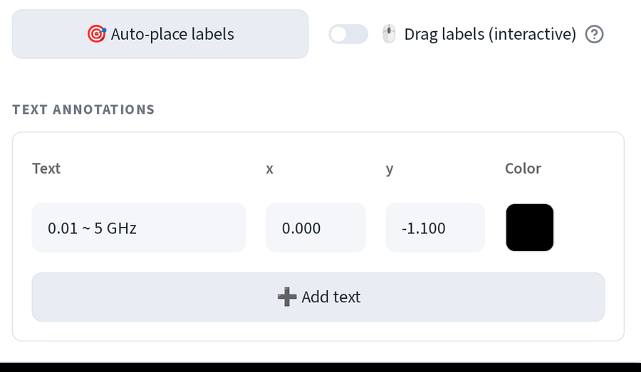
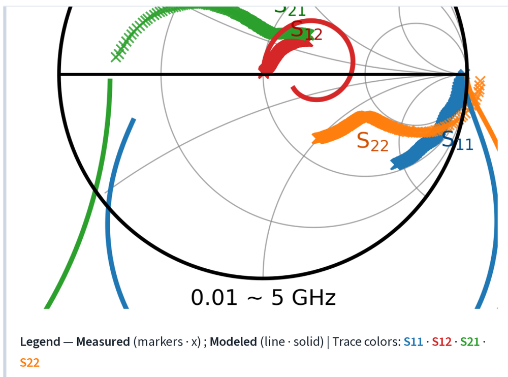

圖表控制¶
把應用程式產生的圖直接放進論文，不需要再重畫一次。以下內容都位於 小訊號模型模擬與擬合 (SSM Simulation & Fitting) 的 🍩 Smith 圖（Matplotlib） (🍩 Smith Chart (Matplotlib)) 展開區內。 那是出版用的渲染器，與上方互動式的 Plotly 圖是分開的。
從任何圖表匯出¶
- xlsx：以試算表格式匯出繪製資料。
- modeled S2P：以 Touchstone 檔案格式匯出擬合模型。
- copy（複製）：點選即可將資料複製到剪貼簿，方便貼到 Origin。
應用程式中每張圖表都有相同的一列按鈕，因此萃取圖與 DC 曲線也是用同樣的 方式匯出。
外插方法¶

f_T 與 f_max 通常超出量測頻段的上限，因此兩者都需要外插。−20 dB/dec 擬合經典的單一斜率滾降；單極擬合 (Single-pole) 則改以極點模型擬合。 當量測在遠低於 f_T 處就停止時，兩者的答案差異最大。若兩個結果相差很大， 務必註明你使用的是哪一種。
外觀¶

- 線寬 (Line thickness) 與格線線寬 (Grid thickness)，單位為 pt。
- 格線圓數 (Grid circles)：要畫出幾條等電阻圓。數量少一些通常在印刷 時更容易閱讀。
- 文字大小 (Text size)：套用於 S 參數標籤與各項標註。
- 配色模式 (Coloring mode)：
依 S 參數 (trace)讓每個 S 參數各自 一種顏色，bicolor對量測用一種顏色、模型用另一種顏色，custom則在 下方提供每條曲線各自的顏色選擇器。
曲線樣式¶

一列給量測，一列給模型。
- 類型 (Kind)：標記 (Markers) 或線條 (Line)。
- 樣式 (Style)：標記符號（
x、o……）或線條樣式（實線、虛線……）。 - 大小 (Size)：標記大小或線寬。
- 抽樣間隔 (Decimate)：每隔 n 個點畫一個。當 1001 個標記把曲線擠成 一整條色帶時，把這個值調高。
應用程式內建的慣例，量測用 x 標記、模型用實線，是大多數讀者預期的樣式。
除非有理由，否則不建議更動。
各 S 參數設定¶

| 欄位 | 功能 |
|---|---|
| 倍率 (Multiplier) | 在繪圖前對該曲線乘上倍率，用來把 S12 拉到與 S21 相近、方便閱讀的大小。僅影響顯示，不會改變殘差。 |
| 文字 (Text) | 繪製在圖上的標籤文字，預設為 S11、S12…… |
| x 位置 (x pos)、y 位置 (y pos) | 該標籤所在位置，以 Γ 座標表示。 |
| 曲線 (Trace) | 該曲線的顏色色塊。 |
| 文字（顏色） (Text) | 標籤文字的顏色，通常比曲線色深一些。 |
移動標籤¶

- 點選🎯 自動排列標籤 (🎯 Auto-place labels)，讓應用程式自動排好 四個標籤的位置。
- 開啟拖曳標籤（互動） (Drag labels (interactive))，把任一標籤拖到 你想要的位置。拖動時上方的 x/y 欄位會同步更新，因此可以先大致拖動， 再輸入精確數字。
底部的文字標註 (Text annotations) 可新增自由文字。下圖上的
0.01 ~ 5 GHz 說明文字就是其中一例。輸入字串、x、y 與顏色，再點選
➕ 新增文字 (➕ Add text) 即可新增下一個。
